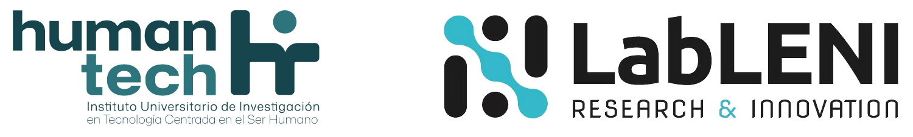
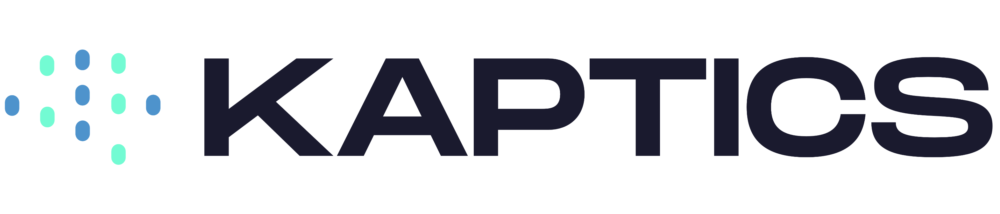
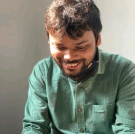
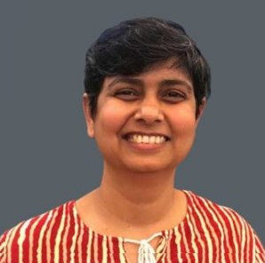

NeuroXR: Neurophysiological Signals, Affective Computing, and Cognition in Extended Reality explores the intersection of XR, neurotechnology, affective computing, cognitive science, neuroengineering, and human-computer interaction.
The workshop focuses on how immersive systems can sense, interpret, and respond to users’ cognitive, affective, perceptual, behavioral, and neurophysiological states.
Key themes include neurophysiological and behavioral sensing in XR, real-time user-state inference, closed-loop and adaptive XR systems, neurofeedback and biofeedback, sensory augmentation and neuroprostheses, and the ethical challenges raised by sensitive neurophysiological and behavioral data.
This hybrid workshop invites researchers and practitioners to present current research through paper presentations, discussion sessions, a keynote, expert panels, remote and in-person networking, and potential industry demonstrations.
The workshop will provide a forum for discussing emerging methods, applications, and open challenges in NeuroXR, while fostering collaboration across XR, neuroscience, affective computing, rehabilitation, assistive technology, and industry communities.
Accepted papers are planned for inclusion in the ISMAR 2026 adjunct proceedings, subject to the conference's workshop publication policy.

University of California, Santa Barbara
United States of America
We invite submissions addressing the intersection of Extended Reality (XR), neurophysiological sensing, affective computing, cognition, and adaptive immersive systems.
Topics of interest include, but are not limited to:
We seek contributions in the following formats:
These are research papers that present empirical results and make significant contributions to the field. Submissions should be between 4–6 pages in length.
These papers present interesting and potentially controversial viewpoints, as well as innovative approaches intended to stimulate discussion during the workshop.
Papers must be written in English and follow the IEEE VGTC conference format:
https://tc.computer.org/vgtc/publications/conference/
All papers should be submitted via Microsoft CMT .
Accepted papers will be published in the ISMAR 2026 Adjunct Proceedings.
At least one author per accepted contribution must register for the ISMAR 2026 conference and attend the workshop.
* The Microsoft CMT service was used for managing the peer-reviewing process for this conference. This service was provided for free by Microsoft and they bore all expenses, including costs for Azure cloud services as well as for software development and support.
| Paper Submission Deadline | 12 July 2026, 11:59 PM AoE |
| Notification of Acceptance | 23 July 2026 |
| Camera-Ready Paper Deadline | 31 July 2026 |
| Workshop Date | 6 October 2026 |
| 08:45 – 09:00 | Introduction |
| 09:00 – 10:00 | Keynote by Prof. Mariano Alcañiz, Universitat Politècnica de València |
| Measuring the Mind in Extended Reality: Behavioral Biomarkers and Virtual Humans | |
| Assessing human cognition, affect, and social behaviour in an ecologically valid way remains an open challenge, since conventional tools rely on explicit self-report measures vulnerable to bias. Over the last fifteen years, our laboratory has pursued an alternative route: recreating meaningful real-life situations in Extended Reality (XR) and measuring people implicitly while they act in them. This has led to the concept of XR-Based Behavioral Biomarkers (XRBB): objective signatures of cognitive and affective processes derived from behavior, gaze, movement and psychophysiological signals recorded during naturalistic immersive experiences and decoded with machine learning. This talk summarises how XRBB has been applied to the early detection of autism, emotion recognition, personality and leadership assessment, and consumer neuroscience. The final part looks ahead to virtual humans as assessment instruments: intelligent virtual agents that elicit and standardise socially rich interactions while continuously sensing the user, paving the way toward closed-loop XR systems that both measure and respond to human cognition. | |
 |
|
| 10:00 – 10:15 | Coffee Break |
| 10:15 – 11:00 | Session I: NeuroXR Sensing and Physiology |
|
Moving Beyond the Flat Screen: Opportunities and Challenges of Extended Reality for Studying Human Brain and Behavior
Tom Bullock, Radha Kumaran, You-Jin Kim, Emily Machniak, Tobias Höllerer, Barry Giesbrecht
|
|
|
How Much Physiology Is Enough? Comparing Pupil-Only and Multimodal Arousal Classification in VR
Beata Pacula-Leśniak, Magdalena Igras-Cybulska, Radosław Niewiadomski, Artur Cybulski, Agata Szymańska, Michał Kuniecki
|
|
|
Sensing and Modulating Autonomic State During a Virtual-Reality Combat Task: A Feasibility Study
Sonam Sonam, Kulbhushan Chand, Arjun Mehra, Srishti Sharma, Yuvraj K. Meena, Gurpreet Kaur, Akash K. Rao, Ramajayam Govindaraji, Arnav Bhavsar Vinayak, Varun Dutt
|
11:00 – 12:00 | Industry Talks and Demonstrations |
| Details TBA | |
|  |
|
| 12:00 – 14:00 | Lunch Break |
| 14:00 – 15:30 | Session II: From Measurement to Neural Responses and Intervention |
|
Validation-First NeuroXR: Immersive VR Spatial Navigation for Route-Memory Assessment Against the Groton Maze Learning Test
Srishti Sharma, Kulbhushan Chand, Akash K. Rao, Varun Dutt
|
|
|
How Early Can You Tell? Early Eye Gaze Dynamics and Cybersickness Progression in Virtual Reality
Nevzat Umut Demirseren, Isayas Berhe Adhanom
|
|
|
Discrete Behavioral Event Mapping for EEG Muscle Artifact Control in XR
Johannes Günter Herforth, Fiammetta Zanetti, Karsten Schönbein, Annika P.C. Lutz, Jean Botev
|
|
|
Cortical Signatures of Visuomotor Incongruence in a VR Hand Switching Paradigm
Jonathan Giron, Or Yizhar, Mohr Wenger, Debbie Chetrit, Gilad Ostrin, Amir Amedi, Doron Friedman
|
|
|
Evaluating Closed-Loop EEG Feedback for Simulated Prosthetic Vision in Immersive VR: A Sham-Controlled Feasibility Study
Ruyi Cao, Lily M. Turkstra, Adyah Rastogi, Michael Beyeler
|
|
|
XR as a Neural Plasticity Interface
Amber Maimon, Iddo Yehoshua Wald
|
15:30 – 16:00 | Coffee Break |
| 16:00 – 17:00 | Panel Discussion |
| Details TBA | |
| 17:00 – 17:15 | Closing Remarks |
| 18:30 – 20:30 | ISMAR Welcome Reception |
| 20:30 – open | NeuroXR Get-Together |

Indraprastha Institute of Information Technology Delhi, India

International Institute of Information Technology Hyderabad, India
The workshop will be held in Bari, Italy as part of the 2026 International Symposium on Mixed and Augmented Reality (ISMAR) .
Feel free to contact the organizers individually or under the following email address: